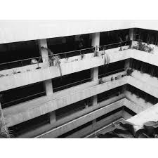

South Wing Building
Description:
This is where Administrative offices such as Office of the President, Office of the Vice President of the Academic Affairs and so on., Faculty of CCIS, CAFA and CS, Science and Technology Research office, Laboratory rooms of CCIS and other offices, and C.M. Recto Hall are located on that building
Location:
Along the X, Y, Z Building (also known as Main Building), Front of Linear Park, Near PUP Ferry Station
Size:
Unknown
Picture:

Others
>> Back